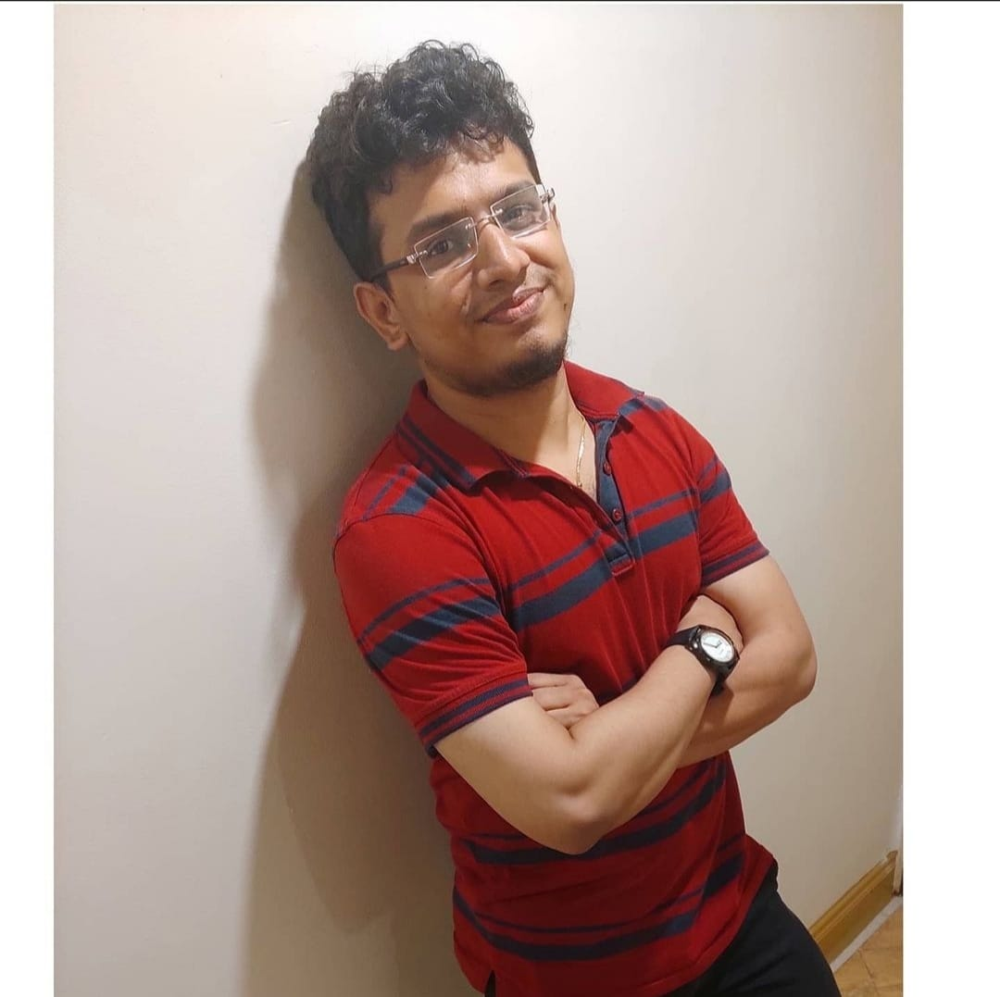

Automation Engineer · Playwright · C# · AI Pipelines
Built an AI pipeline that takes an Azure DevOps story to a reviewed PR — no human steps.
QA Automation Engineer with 6+ years building test frameworks across Java and C# stacks. I specialise in Playwright-based UI automation, API testing, and CI/CD integration — currently exploring how far AI-assisted tooling can push what a single engineer ships in a sprint.
I work best in teams that take quality seriously and want to push what automation can actually do — not just run tests, but shorten the feedback loop between a story and a merged PR. The AI pipeline on this page is my current answer to that question.
Mumbai-based. Open to remote and hybrid roles.